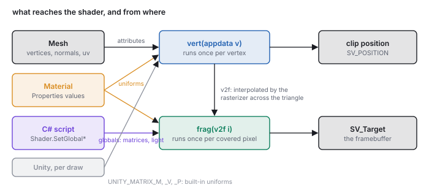
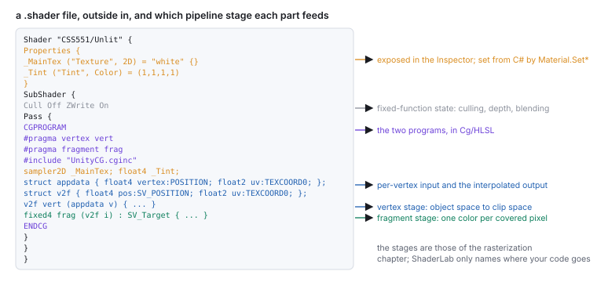

This chapter links to the course’s interactive demos and uses MathJax for its formulas. Read it through the course website (or download the file and open it in a browser); a Canvas inline preview will reach neither the demos nor the math. All chapters.
.shader file is laid out, what the vertex and fragment programs receive and return, where the matrices, textures and lights come from, how a C# script hands values to a shader, and the render state around the programs. Read before the texture and illumination studios and before any machine problem that uploads its own matrices.
A shader is the program the GPU runs at two stages of the pipeline of the rasterization chapter: once per vertex, to place it, and once per covered pixel, to color it. The mathematics of what those programs compute is in the texture and illumination chapters. This chapter is about the container: the ShaderLab file that wraps the two programs, the semantics that name their inputs and outputs, the built-in matrices and the values a script uploads, and the fixed-function state (culling, depth, blending) set around them. It reads the studio projects’ own shader, a no-cull unlit shader that grows a texture, then a second texture, then a checker computed from the coordinates, then a light, and works its arithmetic at one vertex and one pixel. It closes with the errors that produce a magenta object, a black object, or a silently wrong normal, and what each means.
The engine sends each mesh to the GPU as its vertex arrays and a material. The GPU runs the material’s vertex program on every vertex, producing a clip-space position and any values the pixel stage will need; the fixed rasterizer clips, divides, finds the covered pixels and interpolates those values across each triangle with the barycentric weights of the rasterization chapter; the material’s fragment program runs on every covered pixel, producing a color; and the fixed depth test and blend stage writes it. A shader file holds both programs and the fixed-function settings around them, and a material is that file plus values for its parameters. The studio projects use the Built-in Render Pipeline and write the programs in Cg/HLSL, which is what this chapter shows; Unity’s Universal Render Pipeline uses HLSL with different include files and the same two stages.


Shader "CSS551/UnlitTextured" {
Properties {
_MainTex ("Texture", 2D) = "white" {} // a slot in the Inspector, and a uniform
_Tint ("Tint", Color) = (1, 1, 1, 1)
}
SubShader {
Cull Off // draw both faces (the studios' "NoCull")
Pass {
CGPROGRAM
#pragma vertex vert // which function is the vertex program
#pragma fragment frag // which is the fragment program
#include "UnityCG.cginc" // UnityObjectToClipPos, TRANSFORM_TEX, ...
sampler2D _MainTex; // the same names as in Properties
float4 _MainTex_ST; // tiling (xy) and offset (zw), filled by Unity
float4 _Tint;
struct appdata { // per-vertex input, from the mesh
float4 vertex : POSITION;
float3 normal : NORMAL;
float2 uv : TEXCOORD0;
};
struct v2f { // vertex output, interpolated to the pixel
float4 pos : SV_POSITION; // clip-space position (required)
float2 uv : TEXCOORD0;
};
v2f vert (appdata v) {
v2f o;
o.pos = UnityObjectToClipPos(v.vertex); // P · V · M · vertex
o.uv = TRANSFORM_TEX(v.uv, _MainTex); // uv * tiling + offset
return o;
}
fixed4 frag (v2f i) : SV_Target {
return tex2D(_MainTex, i.uv) * _Tint; // one sample, tinted
}
ENDCG
}
}
}
2D, Color, Float, Vector) and a default.
SubShader is one implementation (a file may hold several for different hardware);
its top-level lines are render state. Pass is one draw of the geometry; a
multi-pass shader draws the mesh more than once. CGPROGRAM … ENDCG encloses
the programs; the #pragma lines name which functions are which, and the
#include brings in the helper functions and matrix names of Section 4.
POSITION (the mesh’s
vertex, in object space), NORMAL, TEXCOORD0, TEXCOORD1, …
(the mesh’s uv, uv2 arrays), COLOR. Outputs of the vertex
program and inputs of the fragment program: SV_POSITION, the clip-space position the
rasterizer needs, and TEXCOORDn for anything else you want interpolated
(coordinates, a world position, a normal, a color). Output of the fragment program:
SV_Target, the color written to the framebuffer.
The types are the small vector types of shading languages: float, float2,
float3, float4, with half and fixed as lower
precision variants (the studios use fixed4 for colors), and float4x4 for a
matrix. Swizzles read and reorder components (v.xyz, c.rgb,
p.xy), and the arithmetic operators act component-wise. mul(M, v) is a
matrix-vector product, dot, cross, normalize, length,
saturate (clamp to \([0,1]\)), lerp and smoothstep are the
vector chapter’s operations under their shading names.
UnityObjectToClipPos(v.vertex) does the whole chain in one call:
mul(UNITY_MATRIX_MVP, float4(v.vertex.xyz, 1)), which is \(P\,V\,M\) applied to the
homogeneous point. The divide by \(w\) and the viewport mapping happen after the program returns,
in the fixed stage, so o.pos is the four-component clip vector, not the pixel.
Everything in v2f other than pos is interpolated with perspective
correction (the rasterization chapter) before
the fragment program sees it. A normal interpolated this way is no longer unit length, which is why
a lit fragment program normalizes it first; a world position interpolates exactly, which is why the
studio shaders pass one to compute the light direction per pixel.
| name in the program | what it is | the text’s symbol |
|---|---|---|
UNITY_MATRIX_M (also unity_ObjectToWorld) | the object’s world matrix from its Transform hierarchy | \(W\) of the scene-graph chapter, \(M\) of the viewing chain |
UNITY_MATRIX_V | world to camera | \(V\) |
UNITY_MATRIX_P | camera to clip | \(P\) |
UNITY_MATRIX_MVP, _MV, _VP | the products, precomputed per draw | \(PVM\), \(VM\), \(PV\) |
unity_WorldToObject | the inverse of the world matrix | \(M^{-1}\) |
_WorldSpaceCameraPos | the eye | \(\mathbf{e}\) |
These are filled by the engine for every draw from the object’s Transform and the camera. The
studio projects that teach matrices do something different on purpose: they compute a matrix in C#
and upload it under their own name, so that the shader multiplies by the student’s matrix and
nothing else. The scene-graph project sets each node’s composite as
material.SetMatrix("MyXformMat", m), and the viewing project uploads its own \(V\) and
\(P\) as globals:
// C#, once per frame in the camera's script (the viewing studio)
Matrix4x4 r = ...; // the basis, built from cross products
Matrix4x4 t = Matrix4x4.TRS(-transform.position, Quaternion.identity, Vector3.one);
Shader.SetGlobalMatrix("CameraViewMatrix", r * t); // V = R · T(−eye)
Matrix4x4 p = Matrix4x4.Perspective(c.fieldOfView, c.aspect, c.nearClipPlane, c.farClipPlane);
Shader.SetGlobalMatrix("CameraProjMatrix", p);
// the shader, reading them instead of UNITY_MATRIX_V and _P
uniform float4x4 CameraViewMatrix;
uniform float4x4 CameraProjMatrix;
uniform float4x4 MyXformMat;
v2f vert (appdata v) {
v2f o;
float4 world = mul(MyXformMat, v.vertex); // your M
o.pos = mul(CameraProjMatrix, mul(CameraViewMatrix, world)); // your P · V
return o;
}
Matrix4x4.Perspective returns rows \((1.358, 0, 0, 0)\), \((0, 2.414, 0, 0)\),
\((0, 0, -1.286, -2.286)\), \((0, 0, -1, 0)\): entry for entry the \(P\) of the viewing chapter and of
the library’s perspective(45, 16/9, 1, 8). The engine uses the same matrix for its own
UNITY_MATRIX_P on most platforms and a flipped or remapped one on others (Direct3D’s
depth range is \([0, 1]\), and its framebuffer is upside down), which GL.GetGPUProjectionMatrix
accounts for; the studio shader that reads the uploaded matrix directly is correct wherever the
engine’s choice matches, which it does in the editor on the platforms the course uses.
mul(M, v) with v a column is the text’s \(M\mathbf{v}\); the
float4(v.vertex.xyz, 1) is the homogeneous lift of the
affine chapter, and a direction is lifted with 0 instead so that the translation drops out.
A value the program reads that is the same for every vertex and pixel of a draw is a uniform. There are two routes in.
Properties, declare again as a variable of the matching type inside the program, and the Inspector shows a control for it on every material using the shader. From C#, renderer.material.SetFloat("_MaxTheta", 25f), SetColor, SetVector, SetMatrix, SetTexture write it for one object’s material copy. The illumination studio’s spot-cone angles are set this way.Shader.SetGlobalVector("LightPosition", p) (and SetGlobalColor, SetGlobalFloat, SetGlobalMatrix) writes a value every shader can read by declaring a variable of that name, with no Properties entry. The studios’ light is plumbed this way: a PointLight script copies the light object’s transform and color into globals every frame, and every lit shader reads them.// PointLight.cs (the illumination studio): the light is an ordinary object, and a script
// hands its transform and color to every shader as globals, once per frame
public void LoadLightToShader() {
Shader.SetGlobalVector("LightPosition", transform.localPosition);
Shader.SetGlobalColor ("LightColor", LightColor);
Shader.SetGlobalFloat ("LightNear", Near);
Shader.SetGlobalFloat ("LightFar", Far);
Shader.SetGlobalVector("LightDirection", DirLight.up); // the spot's aim
Shader.SetGlobalVector("SlightPos", DirLight.localPosition);
}
// and in the shader:
uniform float4 LightPosition; uniform float4 LightColor; uniform float3 LightDirection;
Names must match exactly between the C# string and the shader declaration, and a mismatch is not an error: the shader reads zero. That is the first thing to check when a light has no effect.
A texture property arrives as a sampler2D, and tex2D(sampler, uv) is the
sampling of the texture chapter: wrap mode and
filtering are set on the texture asset in the Inspector (Repeat or Clamp; Point, Bilinear or
Trilinear; mipmaps on or off), and the sampler applies them. The engine also fills a companion
float4 named _MainTex_ST with the material’s tiling in xy
and offset in zw; TRANSFORM_TEX(uv, _MainTex) expands to
uv * _MainTex_ST.xy + _MainTex_ST.zw, the scale-then-offset placement that the texture
studio does by hand in C# and that the texture chapter
writes as a \(3\times3\) matrix.
0.2 * tex2D(_MainTex, i.uv) + 0.8 * tex2D(_SecTex, i.uv1): for texels
\((0.9, 0.2, 0.2)\) and \((0.2, 0.4, 0.9)\) the result is \((0.34, 0.36, 0.76)\), the weighted mix
per channel. The second coordinate set comes from the mesh’s uv2 array through a
TEXCOORD1 input.
int su = int(i.uv.x * URepeat); int sv = int(i.uv.y * VRepeat); then
Color1 if su % 2 == sv % 2, else Color2. At \((0.31, 0.62)\) with
8 repeats, \(su = \lfloor 2.48\rfloor = 2\), \(sv = \lfloor 4.96\rfloor = 4\), both even, so
Color1: the fourth-column, fifth-row check of the board, the same parity rule the
course’s uv-placement demo bakes into its 8×8 texture.
The studio shaders do their own lighting rather than the engine’s. The vertex program carries the world position and the world normal to the fragment program; the fragment program builds \(\mathbf{L}\) from the light’s global position, clamps \(\mathbf{N}\cdot\mathbf{L}\), and multiplies. It is the illumination chapter’s diffuse term, in the language of Section 3:
struct v2f { float4 pos : SV_POSITION; float3 normal : TEXCOORD0; float3 vertexWC : TEXCOORD1; };
v2f vert (appdata v) {
v2f o;
o.pos = UnityObjectToClipPos(v.vertex);
o.vertexWC = mul(UNITY_MATRIX_M, v.vertex).xyz; // the point, in world space
// "this is not pretty but we don't have access to inverse-transpose ..."
float3 p = v.vertex.xyz + v.normal; // a point one step along the normal
p = mul(UNITY_MATRIX_M, float4(p, 1)).xyz; // that point, in world space
o.normal = normalize(p - o.vertexWC); // the difference: a world-space direction
return o;
}
float ComputeDiffuse (v2f i) {
float3 l = normalize(LightPosition.xyz - i.vertexWC); // direction to the light, per pixel
return clamp(dot(normalize(i.normal), l), 0, 1); // max(0, N·L)
}
fixed4 frag (v2f i) : SV_Target {
return _Color * LightColor * ComputeDiffuse(i);
}
UnityObjectToWorldNormal(v.normal) multiplies by the inverse transpose and works
everywhere. The studio’s spot-light shader steps by 10 * v.normal instead of
v.normal, which changes nothing in exact arithmetic and reduces rounding when the model
is small.
The spot cone, the attenuation and the specular term of the illumination chapter are each a few
more lines in ComputeDiffuse: acos(dot(l, LightDirection)) for the angle to
the axis, smoothstep for the soft edge, reflect(-l, n) for the mirror
direction, pow(saturate(dot(r, v)), shininess) for the highlight, with
v = normalize(_WorldSpaceCameraPos - i.vertexWC). Every one of them is a dot product of
two unit vectors computed per pixel, which is Phong shading in the sense of
the meshes chapter; moving the computation into the vertex program
and interpolating the result would be Gouraud shading.
| line in the SubShader or Pass | default | what it does |
|---|---|---|
Cull Back / Cull Front / Cull Off | Back | skips triangles whose winding faces away; the studios’ 451NoCullShader sets Off so a hand-built triangle with the wrong winding is still visible (the meshes chapter) |
ZWrite On / Off | On | whether the pass writes the depth buffer; transparent objects usually turn it off |
ZTest LEqual / Always / … | LEqual | the depth comparison of the rasterization chapter |
Blend SrcAlpha OneMinusSrcAlpha | off | the over operator with straight alpha; Blend One OneMinusSrcAlpha for premultiplied; Blend One One is additive |
Tags { "Queue" = "Transparent" } | Geometry | draws after the opaque queue, back to front, so blending sees the opaque scene |
A blended pass with ZWrite On hides everything behind it that draws later; a blended pass
in the opaque queue draws in an order that has nothing to do with depth. Both are common first
transparency bugs, and both are settings, not code.
| what you see | what it means | where to look |
|---|---|---|
| the object is solid magenta | the shader failed to compile, or the material references a missing shader | select the shader asset in Project: the Inspector lists the compile errors with line numbers |
| the object is black | the fragment program returned zero: a uniform not set (name mismatch), a light behind the surface, a texture missing | return a constant color first; then return fixed4(i.normal * 0.5 + 0.5, 1) to see the normals as colors, the studio’s own debugging trick |
| the object is invisible | culled (wrong winding with Cull Back), clipped (outside near or far), or a wrong matrix sending it off screen | Cull Off to test; print the uploaded matrix from C#; check the camera’s planes |
| the texture is flipped or shifted | the \(v\) origin convention, or tiling and offset on the material | the texture chapter; the material’s Inspector |
| lighting is right at rest and wrong when the object is scaled | the normal transformed by \(M\) instead of the inverse transpose | Section 7 |
| shading changes when the mesh is subdivided | lighting computed per vertex and interpolated | move the computation to the fragment program |
return fixed4(i.normal * 0.5 + 0.5, 1);. Expected:
the sphere shows a smooth rainbow, red where the normal points along \(+x\), green along
\(+y\), blue toward the camera’s forward; rotate the object and the colors turn with it
because the normal is in world space. Restore the line.
PointLight.cs, misspell one global
name (for instance "LightPosision") and Play. Expected: no error anywhere, and the
surface goes dark, because the shader’s LightPosition is now zero and every
\(\mathbf{L}\) points at the origin.
Cull Off to Cull Back in the shader and Play, then reverse the index
triple in the C# from (0, 1, 2) to (0, 2, 1). Expected: the triangle
disappears at the first change and reappears at the second.
Debug.Log(p) and compare with the library:
node -e "import('./lib/core/xform.js').then(x=>{const m=x.perspective(45,16/9,1,8);for(let r=0;r<4;r++)console.log([m[r],m[4+r],m[8+r],m[12+r]].map(v=>+v.toFixed(3)))})"
[ 1.358, 0, 0, 0 ]
[ 0, 2.414, 0, 0 ]
[ 0, 0, -1.286, -2.286 ]
[ 0, 0, -1, 0 ]
struct appdata { float4 vertex : POSITION; float3 normal : NORMAL; float2 uv : TEXCOORD0; float2 uv1 : TEXCOORD1; }; and struct v2f { float4 pos : SV_POSITION; float2 uv : TEXCOORD0; float2 uv1 : TEXCOORD1; float3 worldPos : TEXCOORD2; float3 normal : TEXCOORD3; };. The TEXCOORD indices on the output are labels for interpolation slots and need not match the input’s.
UnityObjectToClipPos(v.vertex) into explicit multiplications by the three matrices, in the right order.
mul(UNITY_MATRIX_P, mul(UNITY_MATRIX_V, mul(UNITY_MATRIX_M, float4(v.vertex.xyz, 1)))): model first, then view, then projection, read right to left as in every chapter.
float4(v.normal, 0) directly?
Color1. \((3, 2)\): parities differ, Color2. Crossing \(v = 1/3\) flips the color, the boundary between row 1 and row 2.
Blend SrcAlpha OneMinusSrcAlpha. What pixel results? And with Blend One One?
LightPosition0, LightPosition1, and so on) set by each light’s script, matching declarations in the shader, and a fragment program that evaluates ComputeDiffuse for each and sums, adding the ambient once, as the illumination chapter prescribes.
.shader file that cause it and one to a .cs file that cannot.
SV_POSITON), a variable used without declaration; a C# error stops Play entirely rather than turning anything magenta, since C# compiles before the scene runs.
float in v2f. Run it on a coarse sphere and on a fine one; what differs, and why?
UnityObjectToClipPos in a working shader by the explicit product using the two globals of Section 4 uploaded from a script, and confirm the picture does not change. Then upload the identity as the view matrix and describe what you see.
ViewMatrixWrong mode is exactly this experiment.